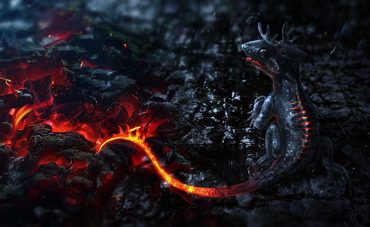

The lindworm (worm meaning snake), also spelled lindwyrm or lindwurm, is a mythical creature in Northern and Central European folklore living deep in the forest that traditionally has the shape of a giant serpent monster. It can be seen as a sort of dragon. According to legend, everything that lies under the lindworm will increase as the lindworm grows, giving rise to tales of dragons that brood over treasures to become richer. Legend tells of two kinds of lindworm, a good one associated with luck, often a cursed prince who has been transformed into another beast (as in the fairy tale The Frog Prince), and a bad one, a dangerous man-eater which will attack humans on sight. A lindworm may swallow its own tail, turning itself into a rolling wheel, as a method of pursuing fleeing humans. The head of the 16th-century lindworm statue at Lindwurm Fountain (Lindwurmbrunnen) in Klagenfurt, Austria, is modeled on the skull of a woolly rhinoceros found in a nearby quarry in 1335. It has been cited as the earliest reconstruction of an extinct animal.
SALAMANDER The salamander is an amphibian of the order Urodela which, as with many real creatures, often has been ascribed fantastic and sometimes occult qualities by pre-modern authors (as in the allegorical descriptions of animals in medieval bestiaries) not possessed by the real organism. The legendary salamander is often depicted as a typical salamander in shape with a lizard-like form, but is usually ascribed an affinity with fire, sometimes specifically elemental fire.
This legendary creature embodies the fantastic qualities that ancient and medieval commentators ascribed to the natural salamander. Many of these qualities are rooted in verifiable traits of the natural creature but often exaggerated. A large body of legend, mythology, and symbolism has developed around this creature over the centuries. Carl Linnaeus in the 10th edition of Systema Naturae of 1758 established the scientific description of the salamander and noted[1] the chief characteristics described by the ancients, the reported ability to live in fire and the oily exudates.
BACK TO MAP